First Emperor’s Clay Army
I woke up around 6:30AM.
Today’s plan was to visit Emperor Qin’s Terra-Cotta Warriors and Horses Museum.
I traveled light and only carried my camera and a notebook to go with me.
The hostel I stayed was in a convenient location, only 10 minutes walk to the train station.
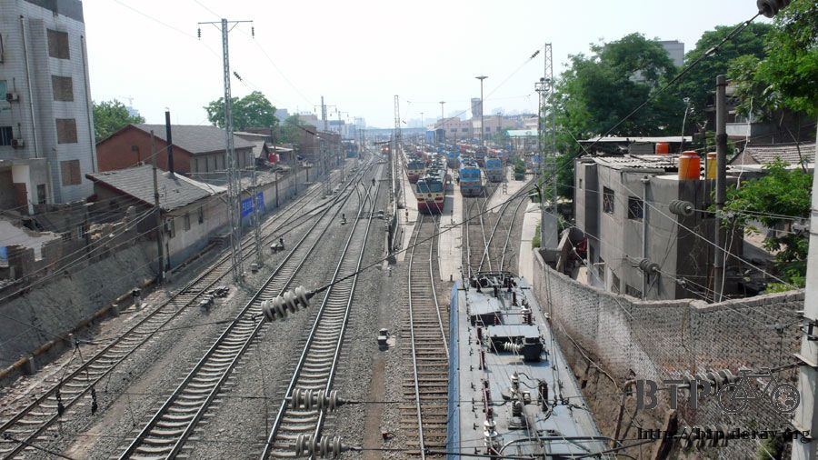
There were many public buses and tour buses leaving from the train station.
It should be no problem finding a bus going to anywhere in Xian.
I was afraid that the bus did not give small change, so I spent one RMB for breakfast to get some change.
Wandering in front of the train station, very soon I found the double-deck bus
which operated along the highway to the Terra-cotta Warriors and Horses Museum
(some buses drove along local roads not only to pick up more passengers, but also to avoid the toll).
It cost me 7RMB each way, a reasonable price.
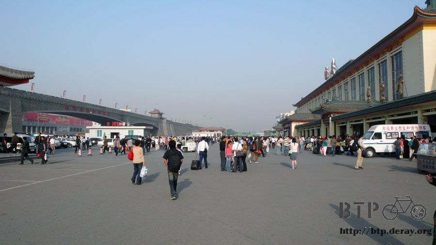
There were many taxis soliciting tourists in front of the train station.
Taxi drivers kept asking “Where do you want to go?
Huaqing Hot Springs, Terra-cotta Warriors and Horses Museum? Emperor Qin’s Mausoleum?”.
Out of curiosity, I spoke to a taxi driver for the price to go to the Terra-cotta Warrior and Horses Museum.
The starting price for the flat rate was one hundred RMB.
If running on taxi-meter, it was 1.2 RMB per km. Taxis in China are not cheap.
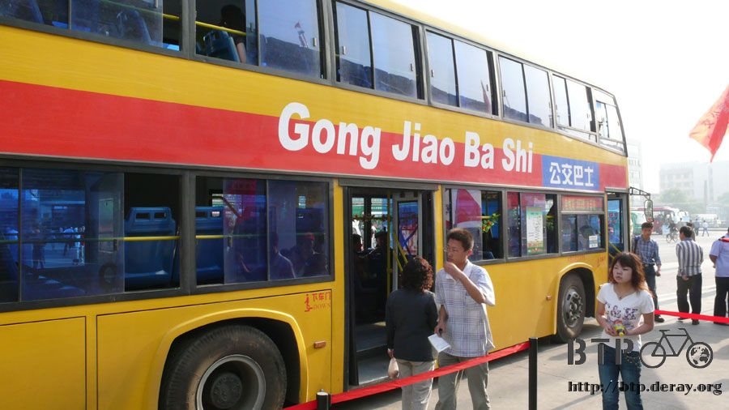
China’s Chinese-English translation was very “cool”.
“Public Bus” could be translated to “Gong Jiao Ba Shi”.
Translation like such was for whom? For foreigners?
I was sure that foreigners won’t understand it at all. For Chinese?
Chinese would only just read the Chinese.
It must be for the kids who do not read Chinese but have learned Hanyu Pingyin.
[Note: “Gong Jiao Ba Shi” is the phonetic translation of Chinese “public bus”]
There were backpackers from different countries in front of the train station.
They all carried tour books and maps in their own languages for information.
I really like the concept of the self-guided tour and always travel on my own.
I would never ever join a guided tour unless it was free.
On the way to the Museum, the bus passed Huaqing Hot Springs
(I was not interested in the place where Yang Guifei took a bath, so I did not get off the bus).
Then, the bus passed Emperor Qinshihuang’s mausoleum, which was an earthen mound.
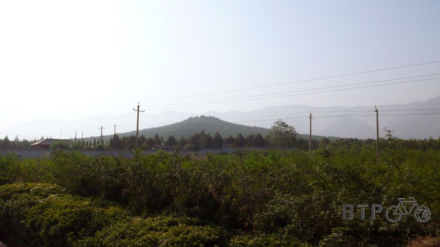
The mercury density around the tomb is higher than other areas,
about 250 times higher than the safety standard.
The mercury vapor trapped inside the tomb is highly toxic. As of now,
nine passages dug by tomb robbers have been found, but all the tomb robbers died of poison.
Moreover, within the tomb, traps and weapons were installed to deter tomb robbers.
The tomb was very deep, according to historical records,
the man in charge of the construction reported to the emperor that they could not dig in any more, since they could not light their torch.
Nobody knows how deep it would have to be to prevent a torch from igniting.
Historical documents said that 720,000 laborers were forced to construct the tomb,
but it is still unknown how huge the mausoleum could be.
The excavation of the tomb is ruled out because there is no good technology for protecting the relics inside the tomb.
I just imagined what it might look like but did not get off the bus.
The last bus stop was the Terra-cotta Warrior and Horses Museum.
There is about half an hour walk from where I got off to the ticket booth.
Of course, along the way, there were many gift shops selling terra-cotta army replicas.
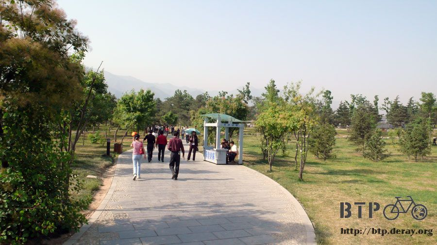
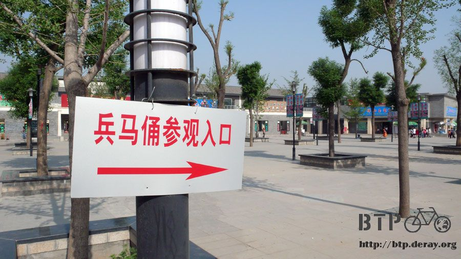
You can find restaurants, gift shops and hotels in one of the museum facilities, “Terra-cotta Warrior Village”.
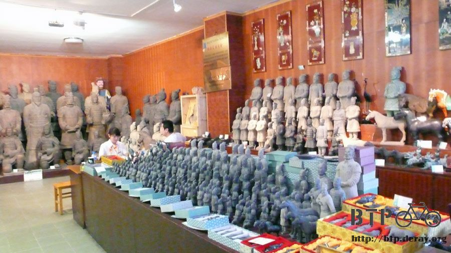
The admission fee was 90 RMB for an adult, and the ticket was like a credit card.
Everybody was screened by the walk-through metal detector before entering the museum.
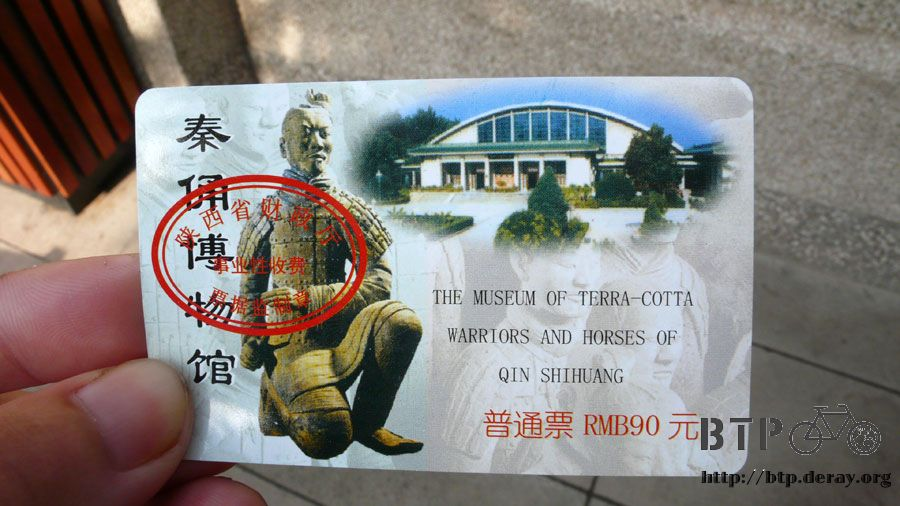
The terra-cotta army was discovered in 1974 when a local farmer accidentally found some pottery fragments.
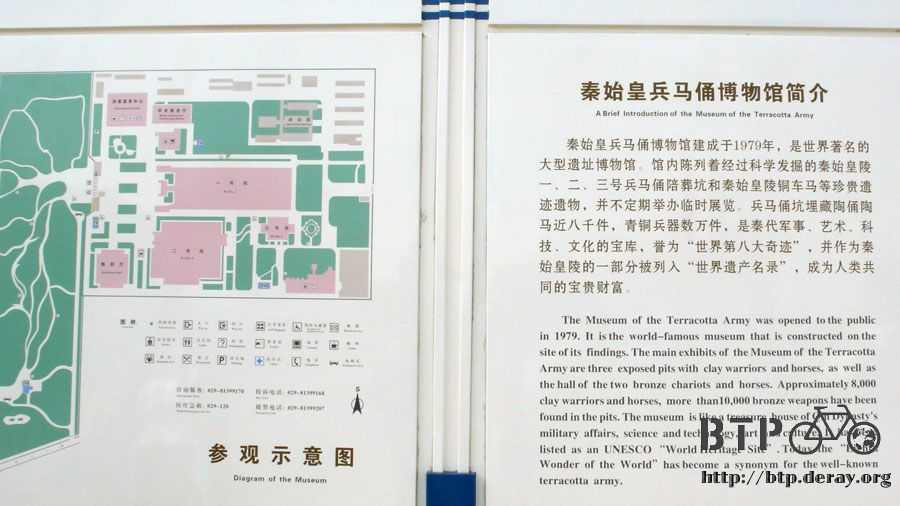
Now, this farmer makes a living selling his autograph at the “Terra-cotta Warrior Village”.
No one knows why the terra-cotta army became buried and lost from memory,
and no written records of the Terracotta Warriors have been found.
Many unknowns can only be guessed at by archeologists’ observation and research.
In a nut shell, Emperor Qinshihuang wanted a long life and feared that
his empire would collapse after he died. So, he built himself a huge tomb.
Because he wanted to lead his army to protect his mausoleum and perpetuate his rule,
he built the terra-cotta army. The army was consisted of foot soldiers,
cavalrymen, civil officers, military officers, chariots, weapons, and many more.
At the last years of Qing dynasty, when a rebel army attacked Xianyang, they found the terra-cotta army.
They removed their weapons, smashed the clay soldiers, and set the tomb ablaze.
The rebels must have laughed at this terra-cotta army who were weak, and could not stand up to any attack.
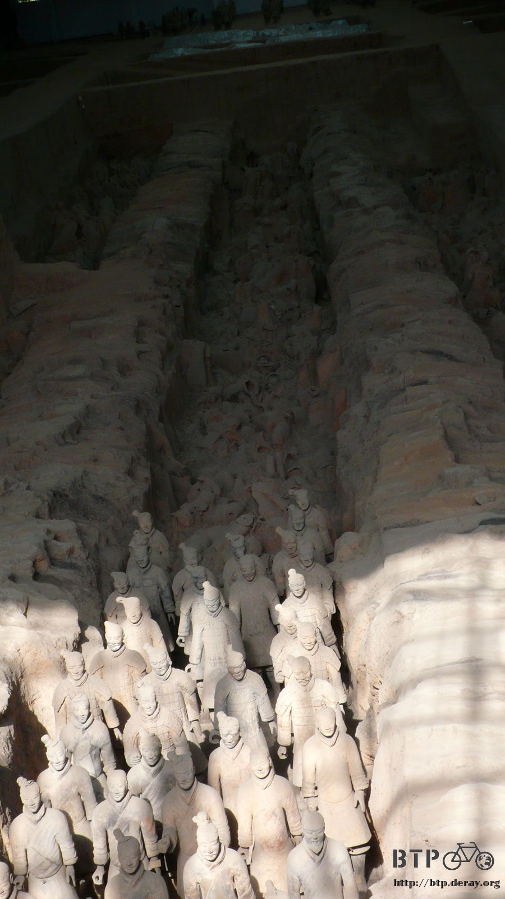
2,280 years later, the terra-cotta army was unearthed accidentally again.
Many archaeologists came to join in the excavation of the unrecorded archaeological wonder.
The museum has three exhibition halls, Pit 1, Pit 2 and Pit 3.
Pit 1 was the first to be discovered and excavated.
The clay soldiers in Pit 1 faced east. However, the soldiers’ weapons had been stolen.
What had left in Pit 1 were smashed and burned pottery fragments.
Mending broken soldiers and removing the dirt from the sculptures bit by bit makes it very difficult to restore the clay soldiers.
It takes a professional several months of painstaking work to restore one clay soldier.
It took eight years of restoration from the time the two bronze chariots and horses were discovered,
to the time they were finally put up on display.
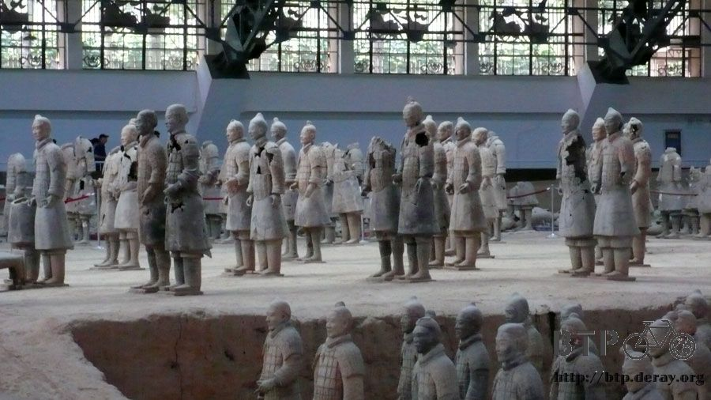
Restoration of the clay soldiers is the ultimate challenge of reassembling 3D jigsaw puzzles.
The archaeologists with the Terra-cotta Warriors and Horses Museum did it,
so we are able to see the restored terra-cotta warriors and horses.
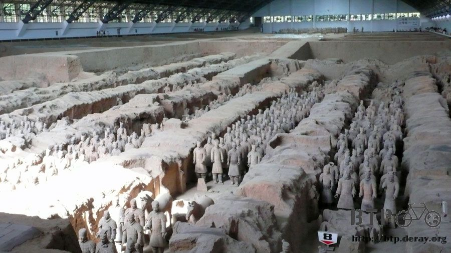
The warriors always appeared as having a dull dirt color but they were originally painted brilliant colors.
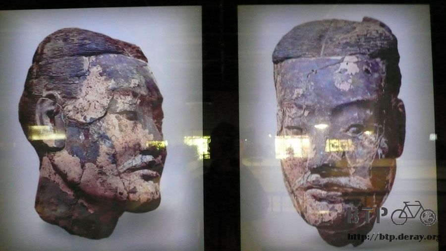
TThe figures had lost their color during their two thousand years underground due to natural erosion and aging.
Once a figure with the colors intact was excavated, the paint quickly peel off after being re-exposed to the air,
daylight and the sudden change in temperature and humidity.
Today’s technology is not able to preserve the color and restore the figures back to their original condition.
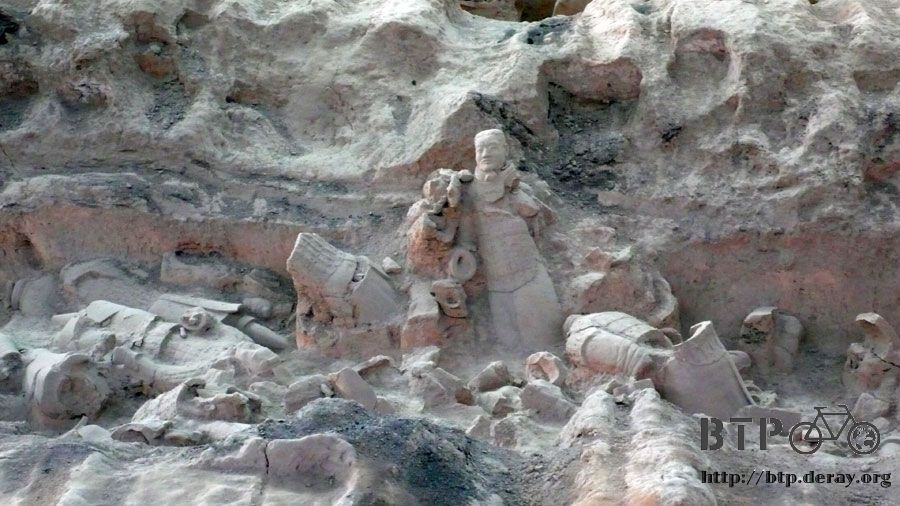
I admired that the China officials made the decision to do
no further excavation of Pit 1. Pit 2 has been filled in and remains almost intact.
Let the 6,000 warriors and houses remain buried underground.
Even they are unearthed now, they are not able to be restored and preserved, which would only accelerates the damage.
Let’s wait until the day that human technology can fully restore the terra-cotta warriors and horses,
then the excavation could be resumed.
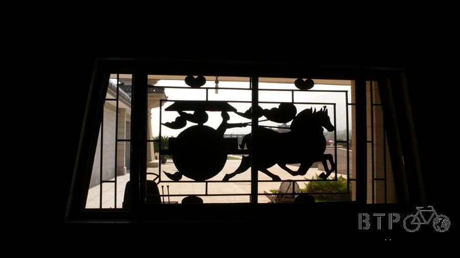
If you have a chance to come to visit the Museum, don’t skimp on your tour,
please hire a tour guide at the museum entrance.
It is really inexpensive, 30 RMB for a group of five or less, or 40 RMB for a group of 10 or less,
and each tour is about one to two hours. The professional tour guides are very knowledgeable
and would definitely make your tour a memorable and worthwhile experience.
I did not have money for a tour guide but listened in on other tours.
I spent five hours at the Museum and learned quite a lot. It was a very worthwhile trip to Xian.
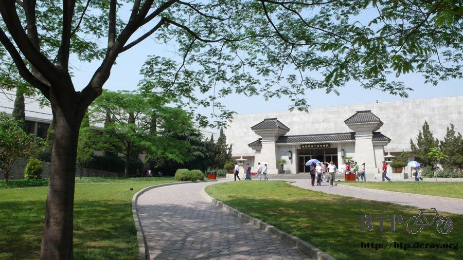
Pit 2 was tentatively excavated in a few areas. Based on the excavation,
the archaeologists estimated the military formation of Pit 2.
The formation was mixed with various kinds of soldiers. Most of the soldiers in Pit 1 were foot soldiers.
In order to protect the unearthed treasure, Pit 2 is lit with very dim light and the room temperature is set low (Pit 1 is very bright).
The museum does its best to preserve the artifacts.
Pit 3 is the headquarters for the army but it is very small (probably not bigger than our houses)
which is divided into two side rooms,north and south.
While the military officials were meeting inside the headquarters, the solders stood guard outside.
The restored clay soldiers are displayed in the south room,
and the clay soldiers in the north room remain as they were when they were unearthed.
After seeing both restored and un-restored figures, I am amazed by the restoration success.
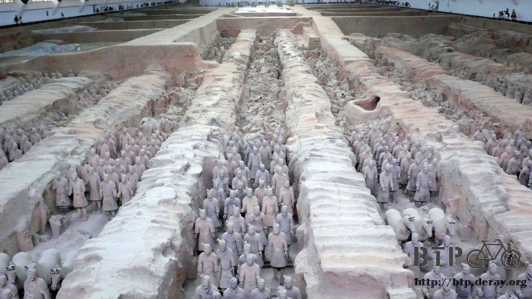
The life-sized terra-cotta warriors and horses are regarded as
“the eighth wonder of the world” in terms of scale, size and artistic quality.
Each life-size figure was sculptured individually, and each has expression, body build and posture of its own.
For the clothes, they were made based on Qin Dynasty’s fashion.
From the belt style, hair style to shoe laces, everything was made as lifelike as possible.
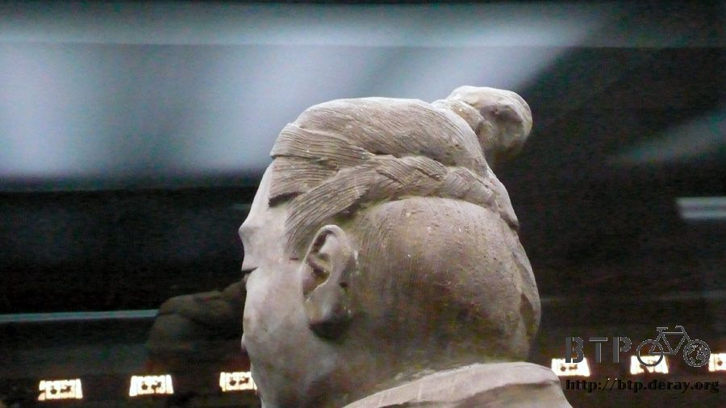
The crafting technique is unbelievably superb in its details.
Even the soles were carved with a tread pattern to resemble the real anti-slip shoes.
The hair for the soldiers was also carefully styled and detailed.
The making of the terra-cotta warriors is not only a large artistic production, the clay soldiers are also masterpieces of realism.
As for weapons, besides the stolen majority, there were some discovered among the remains.
A bronze sword found under a 300 kg clay soldier was bent by the weigh but not broken.
When the excavators lifted up the clay soldier, the bent sword sprang back into shape in a few minutes.
Bronze rusts easily, and turns black-green.
However, this 2,000-year-old bronze sword still shines with a sharp blade.
It is still elastic and can cut through a deck of thirty newspapers. This is a miracle in the history of metallurgy.
The antirust method was developed by the West in 1930.
However, two thousand years ago, the Qin dynasty had developed the technique to prevent rust.
What an incredible civilization! It is a pity that the technique had been lost over time.
Hee Hee, I learned all this from tour guides of other groups, I was not that knowledgeable myself.
Tour Guide Promotion: I followed at least fifteen tour guides today
(it would be too obvious if I eavesdropped only one particular guide),
every guide was very professional. If you have a chance to come to visit the Museum,
don’t skimp on your tour, please hire a tour guide at the museum entrance.
There were other small stories, such as, all the clay soldiers were single eyelids.
It was not because the double eyelids were harder to make,
it was because the Qin Dynasty thought double eyelids made men look sissy.
A handsome man should have a single eyelid.
In the past, you could pay ten cents RMB to walk down to the pit and touch the clay soldiers.
After a clay solder’s head was stolen by a person who paid for the service,
the service was cancelled. The head was sold for 320,000 USD on the black market.
The army of QinShihuang was more than a million strong.
Those made into terra-cotta warriors must have been the ones
who defeated all the other warring states and helped QinShihuang unify the Qin Empire.
Therefore, these eight thousand soldiers were recreated in clay to protect QinShihuang’s tomb for eternity.
If each terra-cotta warrior was really modeled after a real soldier,
can I deduce that soldiers posed for the craftsmen to sculpture their clay soldiers,
and then the clay soldiers were fired and painted?
I imagined that the soldier told the craftsman
“Hey, make me a single eyelid soldier, I will look more handsome that way”
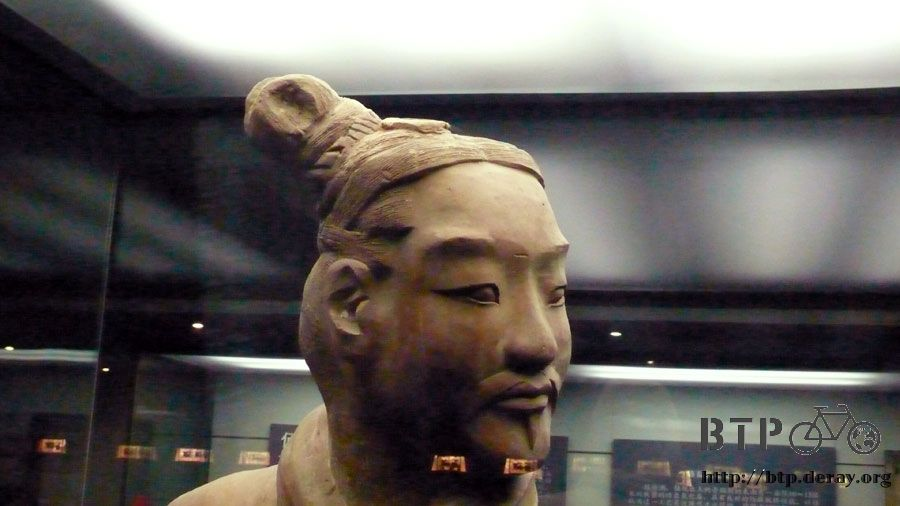
I forgot to bring my own water and ate only three fried cakes for breakfast,
so I was hungry and thirty after five hours in the museum.
However, the food and beverage sold in the museum restaurant were expensive.
They were priced three times higher than the market price.
For foreigners, they probably would think it was inexpensive, no big deal.
However, I was currently in a “poor” state and had to be frugal.
(Probably because its fame and the high entrance fee, almost half of the visitors are from overseas)
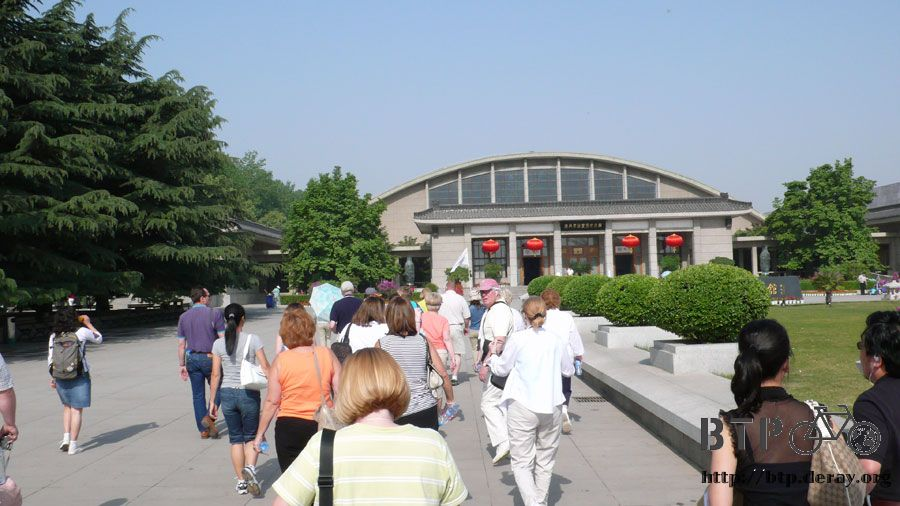
A two RMB soda was sold for eight RMB in the museum.
The museum restaurant is mainly for tour groups for big feasts. Less common popcorn was ten RMB for one bucket.
Sigh! I just had to live with my hunger till I was back in Xian.
In Universal Studio Japan, I spent three hundred NT for popcorn and felt nothing. Now, forty-NT popcorn became a luxury.
I went back to Xian by bus. I had my dinner in a Sichuan restaurant, ordered beef noodle.
(wait a minute! the beef noodle had no beef in it, what kind of beef noodle it is?)
I also had very tasty intestine clay pot (it tasted like SanMa stinky pot). At last, I could enjoy my kind of lunch!
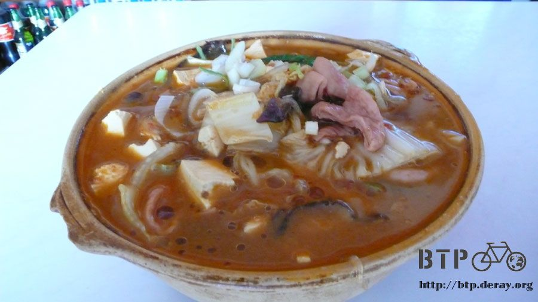
After lunch, I bought two instant noodles, one bag of Want Want rice crackers,
and one 50-cent ice pop at a convenience store. The total was only seven RMB.
I walked back to my hostel from the Internet café. On the way, I bought five bags of milk from a dairy.
I was about to buy two bags, two and twenty cents RMB for two bags of milk.
I thought the smallest change was fifty cents RMB. How did I pay twenty cents RMB?
It turned out there was ten-cent RMB bill.
Unbelievable! China does not use coins but only paper money.
Because it is inexpensive to live there, a one RMB bill can buy you five buns.
I had been in China for two weeks, and never had a chance to use 10 cent bills.
Three 10 cents bills were useless. In order to round it up, I bought five bags of milk.
My dinner would be three bags of milk with the Want Want rice crackers.
By the way, the Want Want Food Company is working hard in China. Their TV commercials are aired frequently.
However, its TV ads such as “O Pao Fruit Milk” are stupid, and worse than the dumb teletubbies.
For tomorrow, I planned to wander around Xian on my bike. Maybe I would pay a visit to Xianyang.
That is because I would leave Xian to take Route 310, and would not pass by Xianyang on the way out of Xian.